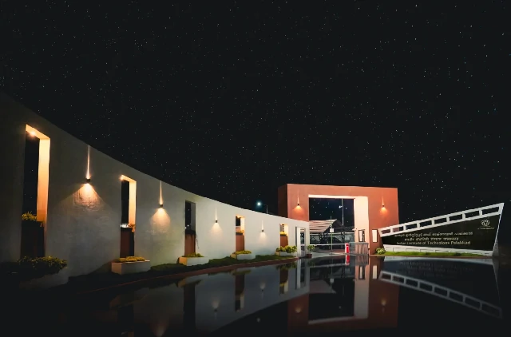
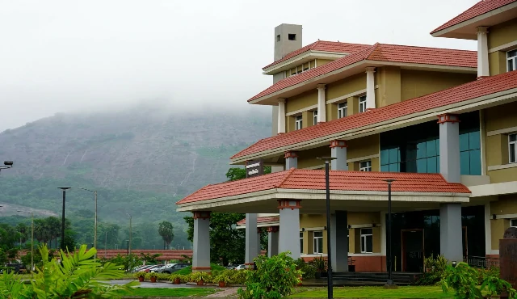
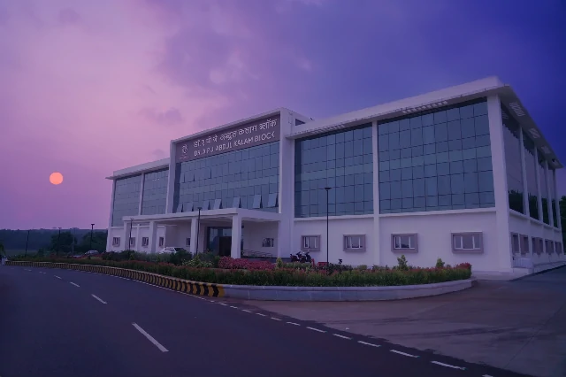
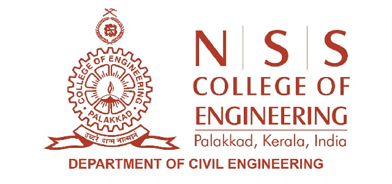
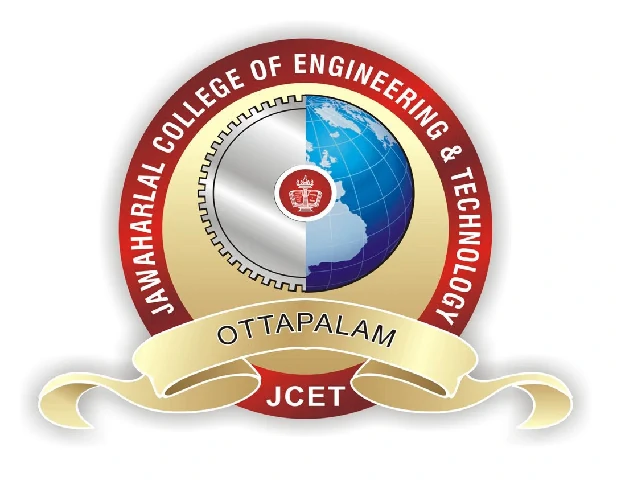

Dr. Animesh Das is a Professor in the Department of Civil Engineering, IIT Kanpur, India. Dr. Das’s area of interest is pavement material characterization, analysis, design and evaluation – and he has a number of publications to his credit in these areas. He has co-authored a text book titled ‘Principles of Transportation Engineering' published by the Prentice-Hall of India (currently known as PHI learning) and authored another book titled ‘Analysis of Pavement Structures’ published by CRC Press - Taylor and Francis Group.
SATVA 2026
Symposium on Advanced Technologies and Visionary Approaches for Sustainability
Pavement Sustainability Frontiers: From Materials to Maintenance
Indian Institute of Technology Palakkad, Kerala, India | June 04-06, 2026
REGISTER NOW
0
Days
0
Hours
0
Minutes
0
Seconds
📢 📢 Early Bird Registration is Open...
About Symposium
The fourth edition of the Symposium on Advanced Technologies and Visionary Approaches for Sustainability (SATVA 2026), organized by the Environmental Sciences and Sustainable Engineering Centre (ESSENCE) at IIT Palakkad in collaboration with the Institution of Engineers (India) (IEI Palakkad Chapter) and Indian Geotechnical Society (IGS Palakkad Chapter), is scheduled to be held from 04 to 06 June 2026 at IIT Palakkad. The symposium aims to facilitate technical exchange and dialogue across diverse domains of engineering with a focus on sustainability. The event will feature expert lectures, research paper presentations, and panel discussions addressing contemporary challenges and innovations in sustainable technologies. The 2026 edition will particularly emphasize sustainability approaches in road infrastructure, highlighting recent advancements and future directions in this critical sector.
Legacy of SATVA
SATVA 2024
"Sustainable Development: Bridging Perspectives on the Food-Energy-Water-Material Nexus"
Visit Website
Pavement Sustainability Frontiers: From Materials to Maintenance
Pavement Sustainability Frontiers: From Materials to Maintenance aims to provide a collaborative platform for researchers, engineers, and industry professionals to exchange knowledge and showcase advances shaping the future of sustainable pavement infrastructure. The symposium is built around four core themes—Resilient & Green Geotechnics, Eco-Efficient Asphalt Technologies, Sustainable Rigid Pavement Systems, and Resilient Roads: Evaluation & Maintenance—each reflecting the growing need for innovation across the pavement lifecycle. These themes highlight progress in eco-friendly materials, performance-driven design, energy-efficient construction practices, and smart, data-enabled maintenance strategies. Together, they emphasize the vision of developing resilient, low-carbon, and resource-efficient pavement systems that support long-term sustainability and improved infrastructure performance.



Our Valued Sponsors
Gold Sponsor
JP Advance Technologies Pvt. Ltd.
(Formerly known as JP Scientific Equipments)
Organisers & Partners
Host Organisation
Indian Institute of Technology
Palakkad
In Association with
Center for Continuing Education (CCE)
IIT Palakkad
The Institution of Engineers (India)
(IEI Palakkad Chapter)
Indian Geotechnical Society
(IGS Palakkad Chapter)
Academic Partners

NSS College of Engineering
Palakkad

Jawaharlal College of Engineering and Technology
Ottapalam, Palakkad